支撑开挖的降水施工
问题描述
注意
本示例的工程文件可在 FLAC3D 中查看/运行。[1] 该工程的主数据文件（main data file）在本示例末尾给出。
在饱和地层中施工一个支撑式基坑。施工期间对基坑进行降水，并由顶部以水平支撑支护的地下连续墙作为支护。FLAC3D 分析的目的是评价：1）墙体邻近及基坑底部地层的变形；2）施工各阶段墙体和支撑的工作性能。分析从墙体已施工完成但尚未开挖的阶段开始。降水、开挖和支撑安装在不同施工阶段中模拟。此外，采用三种不同的材料模型——Mohr-Coulomb 模型（Mohr-Coulomb model）、CYSoil 模型（CYSoil model） 和 PH 模型（PH model）（不带和带小应变刚度选项）——来表示土体的行为，并展示这些模型在该施工顺序下所产生的变形响应差异。
实际施工可能涉及多个降水、开挖和加设支护阶段。为简化起见，本示例仅分析三个施工阶段：1）将待开挖区域降水至 20 m 深度；2）开挖至 2 m 深度；3）安装水平支撑并开挖至 10 m 深度。如有需要，可方便地在 FLAC3D 分析中加入更多开挖阶段。
图 1（Figure 1） 给出了本示例的几何，以及在 Extruder 工具中赋予的两个不同分组中的名称。“Construction”槽位中的第一组名称是交互指定的，而“Block”槽位中的第二组名称由 Extruder 自动指定。基坑宽 20 m，最终深度为 10 m。地下连续墙延伸至 30 m 深度，并在顶部以 2 m 间距的水平支撑支护。地层由两层土组成：20 m 厚的软黏土，下伏延伸至很大深度的坚硬砂层。初始地下水位位于地表。

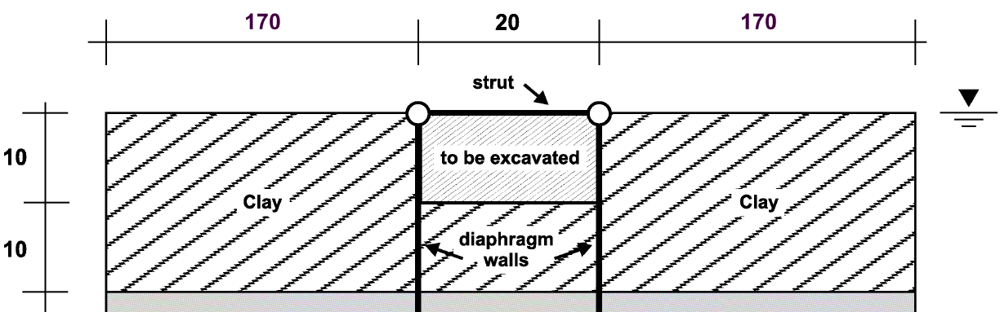
图 1：支撑式基坑示例的几何。
本示例中用于模拟地下连续墙和支撑行为的性质列于表 1（Table 1） 和表 2（Table 2）。地下连续墙的厚度是变化的，估算等效厚度为 1.26 m。
支撑性质列于表 2（Table 2）。支撑间距为 2 m。
土体的渗透系数假定为常数 10-6 m/sec（对应于迁移系数约为 10-10 m2/(Pa-sec)）。
| 等效厚度（m） | 1.26 |
| 密度（kg/m3） | 2000 |
| 杨氏模量（GPa） | 5.712 |
| 泊松比 | 0.2 |
| 惯性矩（m4） | 0.167 |
| 横截面积（m2） | 1.0 |
| 间距（m） | 2.0 |
| 密度（kg/m3） | 3000 |
| 杨氏模量（GPa） | 4.0 |
| 惯性矩（m4） | 0.083 |
问题描述
本示例特别关注开挖过程中土体的变形，尤其是基坑底部的隆起和基坑墙邻近处的地表沉降。采用两种不同的材料模型（Mohr-Coulomb 模型和 CYSoil 模型）来说明材料模型对计算所得土体变形响应的影响。需要注意的是，对于均匀弹性性质，线弹性—理想塑性 Mohr-Coulomb 模型可能对承受加载和卸载的土体预测出不切实际的大变形，例如基坑底部引起的隆起。采用非线性弹塑性 CYSoil 模型可获得更符合实际的计算结果。
与砂和黏土对应的 Mohr-Coulomb 模型排水材料性质汇总于表 3（Table 3）。
PH 模型性质列于表 4（Table 4）。
CYSoil 模型（CYSoil model） 的表述与 PH 模型有若干共同组成部分。表 5（Table 5） 给出了硬化 CYSoil 性质与 PH 性质之间的对应关系。但请注意，二者的硬化律和剪胀律等存在差异。（描述见PH 模型（PH model）。）因此，不应期望两种模型的响应完全相同。
| 砂层 | 黏土层 | |
|---|---|---|
| 干密度（kg/m3） | 1700 | 1600 |
| 杨氏模量（MPa） | 40.0 | 10.0 |
| 泊松比 | 0.30 | 0.35 |
| 黏聚力（MPa） | 0 | 0 |
| 摩擦角（度） | 32 | 25 |
| 剪胀角（度） | 2 | 0 |
| 孔隙率 | 0.3 | 0.3 |
| PH 模型性质 | 砂层 | 黏土层 |
|---|---|---|
| 干密度（kg/m3） | 1700 | 1600 |
| \(p_{ref}\) (kPa) | 100 | 100 |
| \(E^{ref}_{50}\)（MPa） | 30 | 8 |
| \(E^{ref}_{ur}\)（MPa） | 90 | 24 |
| \(E^{ref}_{oed}\)（MPa） | 30 | 4 |
| 泊松比，\(\nu_{ur}\) | 0.2 | 0.2 |
| 黏聚力（kPa） | 1 | 5 |
| 摩擦角（度） | 32 | 25 |
| 剪胀角（度） | 2 | 0 |
| 幂次，\(m\) | 0.5 | 0.8 |
| \(K^{nc}_{0}\) | 0.47 | 0.50 |
| 破坏比，\(R_f\) | 0.9 | 0.9 |
| PH 模型 | CYSoil 模型 |
|---|---|
| \(E^{ref}_{50}\) | – |
| \(E^{ref}_{ur}\) | \(G_{ref} = {E^{ref}_{ur} \over p_{ref}} \cdot {(1-2\nu) \over {2(1-2\nu)}}\) |
| \(E^{ref}_{oed}\) | \(R = {E^{ref}_{ur} \over E^{ref}_{oed}} \cdot {{1-\nu} \over {(1+\nu)(1-2\nu)}} - 1\) |
| 摩擦角，\(\phi\) | \(\phi_f\) |
| 剪胀角，\(\psi\) | \(\psi_f\) |
| 泊松比，\(\nu\) | \(\nu\) |
| 指数，\(m\) | \(m\) |
| 破坏比，\(R_f\) | \(R_f\) |
本示例采用以下步骤来确定 CYSoil 模型的性质。CYSoil 模型能够表示土体所特有的加载和卸载非线性应力/应变响应。
利用表 5（Table 5） 推导出表 6（Table 6） 所示的硬化 CYSoil 性质。FISH 函数 设置命令（setup） 执行由硬化土性质推导 CYSoil 性质的计算。请注意，帽盖—屈服面参数 \(\alpha\) 设为 1。[4]
假定土体为正常固结。因此，初始（发挥）摩擦由初始应力按下式计算
\[\sin \phi_m = {{\sigma'_1 - \sigma'_3} \over {\sigma'_1 + \sigma'_3 - 2c \cot \phi_f}}\]该值在“setup.dat”中列出的 FISH 函数 CY 初始化（ini _cy） 中计算。
表 6：硬化 CYSoil 性质 砂层 黏土层 干密度 \(\rho\)（kg/m3） 1700 1600 帽盖—屈服面参数，\(\alpha\) 1.0 1.0 极限摩擦角 \(\phi_f\)（度） 32 25 极限剪胀角 \(\psi_f\)（度） 2 0 乘数，\(R\) 2.333 5.667 \(G_{ref}\) 112.5 15.0 参考压力 \(p_{ref}\)（kPa） 100 100 泊松比，\(\nu_{ur}\) 0.2 0.2 黏聚力（kPa） 1 5 幂次，\(m\) 0.5 0.8 \(K^{nc}_0\) 0.47 0.50 初始发挥摩擦角 \(\phi_m\)（度） 19.47 19.47 破坏比，\(R_f\) 0.9 0.9 CYSoil 性质 \(K^e\) 和 \(G^e\) 与应力相关，这些性质在建立开挖前初始应力状态之后指定。命令
zone water和zone initialize-stresses用于根据已知的 \(K_0\) 以及地表处初始水位自动初始化孔隙压力和应力。CYSoil 性质 \(p_c\) 也与应力相关。假定黏土和砂在帽盖上为正常固结（ocr = 1），因此 \(p_c\) = \(p_{ini}\)。初始有效应力用于计算 \(p^{\prime}\) 和 \(q\) 的初始值。帽盖和初始压力在“setup.dat”中列出的 FISH 函数 CY 初始化（ini _cy） 中指定。
PH 性质 \(\sigma^{ini}_1\)、\(\sigma^{ini}_2\) 和 \(\sigma^{ini}_3\) 与应力相关。这些有效主应力在“setup.dat”中列出的 FISH 函数 PH 初始化（ini _ph） 中初始化。
输入参数 flag-cap = 1 表示帽盖已激活。
默认参数 flag-dilation（0）表示使用内置的 Rowe 法则；默认参数 flag-shear（0）表示使用内置的剪切硬化律。所有公式均在CYSoil 模型（CYSoil model）中描述。
建模步骤
通过分六个步骤进行分析，说明了用 FLAC3D 模拟此类问题的推荐流程。
步骤 1： 生成模型网格，并指定材料模型、材料性质和边界条件以表示物理系统。 步骤 2： 确定施工前地层的初始原位应力状态。 步骤 3： 确定安装地下连续墙后地层的初始原位应力状态。 步骤 4： 将待开挖区域内的水位降至地表以下 20 m 深度。 步骤 5： 开挖至 2 m 深度。 步骤 6： 在墙体顶部安装水平支撑，然后开挖至 10 m 深度。
针对上述步骤分别创建了三个数据文件：分别对应 Mohr-Coulomb 模型、CYSoil 模型和 PH 模型。Mohr-Coulomb 数据文件名为“BracedExcavation-mc.dat”。CYSoil 数据文件名为“BracedExcavation-cy.dat”。不带小应变刚度的 PH 材料数据文件名为“BracedExcavation-ph.dat”。带小应变刚度的 PH 数据文件名为“BracedExcavation-phss.dat 数据文件（BracedExcavation-phss.dat）”。这些文件的清单见数据文件（data files）。带小应变刚度的 PH 材料与不带小应变刚度的 PH 材料之间的唯一区别在于启用小应变标志的一行：
zone property flag-smallstrain on
模型生成
由于几何对称，只需考虑图 1（Figure 1） 所示问题区域的一半。该网格使用 Extruder 工具交互创建，该工具还用于为模型的区域命名以便后续引用。开挖附近的网格划分为均匀的 1 m，远离开挖处网格单元尺寸逐渐增大。网格最初分为四个分组名：“clay-left”“clay-right”“sand-left”和“sand-right”，分别对应于地下连续墙左右两侧以及砂层和黏土层的网格单元。在正确标高处的“left”与“right”两侧之间指定面分组“Liner”。随后在面分组“Liner”处安装嵌入型衬砌：
struct liner create by-face separate cross-diagonal range group 'Liner'
嵌入型衬砌可以在其两侧具有独立的性质。虽然性质可以不同，但本示例中两侧相同。采用法向和切向耦合弹簧将嵌入型衬砌与网格单元连接。
通常合理的做法是选择接触面法向和切向刚度，使其约为相邻最硬网格单元等效刚度的十倍。这样，接触面的可变形性对整体模型的柔度和计算速度影响最小。网格单元垂直于接触面的等效刚度为
其中 \(K\) 和 \(G\) 分别为体积模量和剪切模量，\(\Delta z_{\min}\) 为相邻网格单元在法向方向上的最小宽度。\(\max\) [ ] 记号表示取接触面相邻所有网格单元中的最大值（例如，接触面可能与若干种材料相邻）。
本示例中，与接触面相邻的最小网格宽度为 1 m，最大等效刚度约为 55 MPa。因此，法向和切向刚度选取代表值 550 MPa/m。
本阶段不指定墙体密度，因为首先要计算墙体施工之前的平衡应力状态。这通过忽略墙体重量来实现。

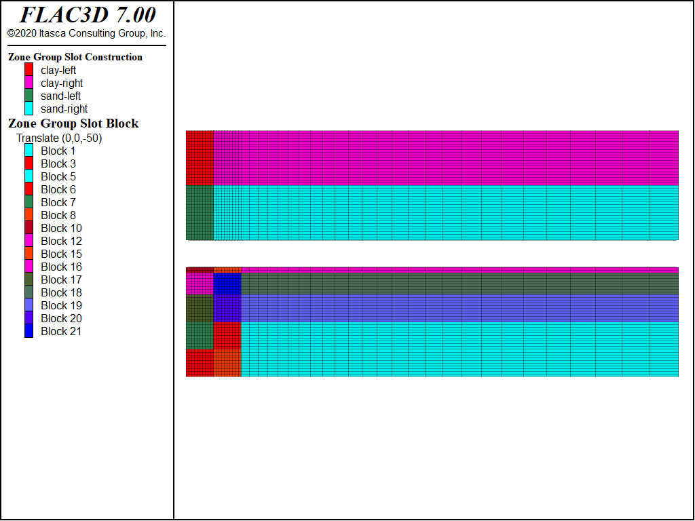
图 2：为支撑式基坑创建的网格。
指定地下水性质孔隙率和渗透率。请注意，FLAC3D 所需的“渗透率”实际上是迁移系数（即达西定律中孔隙压力项的系数——见流体渗透系数（Fluid Permeability Coefficient））。为简化本示例，重力加速度设为 10.0 m/sec2。水的密度设为 1000 kg/m3。滚动边界置于网格的左、右、前、后边界。网格底部固定。
在保存初始状态之前，针对水位位于地表的开挖前初始应力状态指定静力平衡。初始状态下孔隙压力和总（及有效）应力分布必须相互协调。使用 zone water 命令以及高程为 40 的均匀水平面来指定孔隙压力。使用命令 zone initialize-stresses 指定初始应力，砂中 \(K_0\) 比为 0.47，黏土中为 0.50。计算出孔隙压力分布后，固定顶部和侧边边界沿线的孔隙压力以及顶部边界沿线的饱和度，以满足流动条件。初始孔隙压力分布见图 3（Figure 3）。

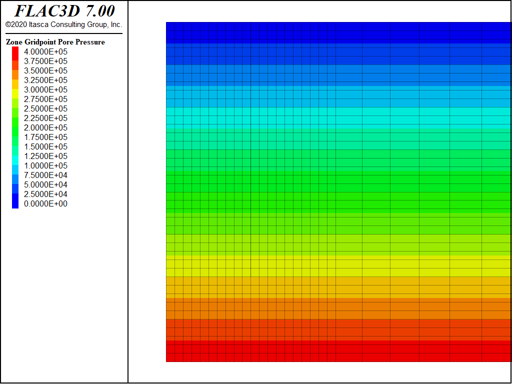
图 3：初始孔隙压力分布。
上述步骤对 Mohr-Coulomb、CYSoil 和 PH 示例是共同的。CYSoil 和 PH 模型需要额外的设置。对于 CYSoil 和 PH 模型，必须指定与应力相关的性质以及（如有需要）硬化表函数。这些以 FISH 函数的形式应用，如“BracedExcavation-cy.dat”中所述。首先执行 FISH 函数 设置命令（setup），以基于硬化土性质推导 CYSoil 相关性质。CYSoil 模型的与应力相关性质在 FISH 函数 CY 初始化（ini _cy） 中输入。类似地，PH 模型的与应力相关性质在 FISH 函数 PH 初始化（ini _ph） 中输入。
初始条件
进行了检查，以验证各模型在给定初始条件和边界条件下处于平衡。虽然使用 初始化衬砌单元耦合命令（structure liner initialize coupling） 命令初始化了衬砌接触面弹簧，但在靠近地下连续墙处仍会进行轻微的应力重新调整。
安装地下连续墙
分析的下一阶段是安装地下连续墙。这通过为嵌入型衬砌指定密度以赋予墙体适当重量来模拟。同时关闭流动模式并确保水的体积模量为零，因为本阶段不希望产生孔隙压力。对三个模型进行求解，并分别保存为“mc-part-3”“cy-part-3”和“ph-part-3”。
图 4（Figure 4）、图 5（Figure 5）、图 6（Figure 6） 和 图 7（Figure 7） 给出了本阶段 Mohr-Coulomb、CYSoil 和 PH 模型的总竖向应力分布。与 Mohr-Coulomb 材料中的墙体相比，CYSoil 材料中墙体周围的应力分布略有差异。这可归因于 CYSoil 材料与应力相关的刚度性质与墙体相邻接触面常数均匀刚度性质之间的差异。尽管差异很小，仍可利用 FISH 施加与应力相关的接触面刚度变化，以给出更接近实际的表示。

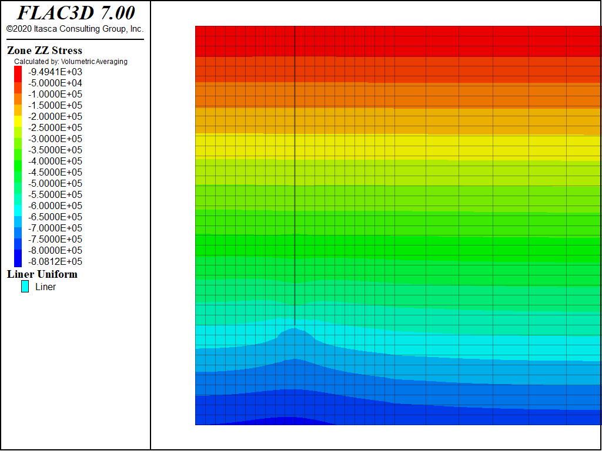
图 4：包含墙体重量时初始饱和状态的总竖向应力云图——Mohr-Coulomb 材料。

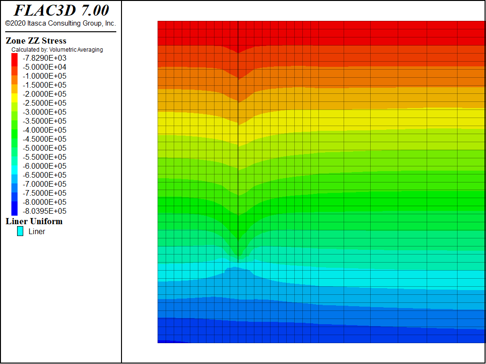
图 5：包含墙体重量时初始饱和状态的总竖向应力云图——CYSoil 材料。

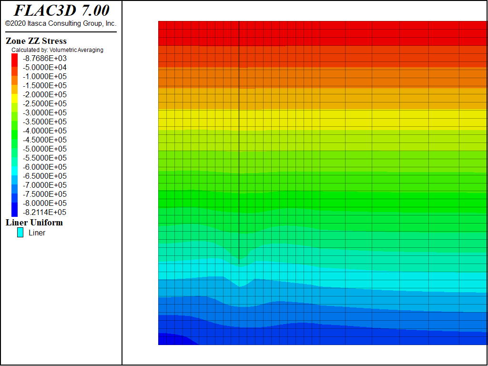
图 6：包含墙体重量时初始饱和状态的总竖向应力云图——PH 材料。

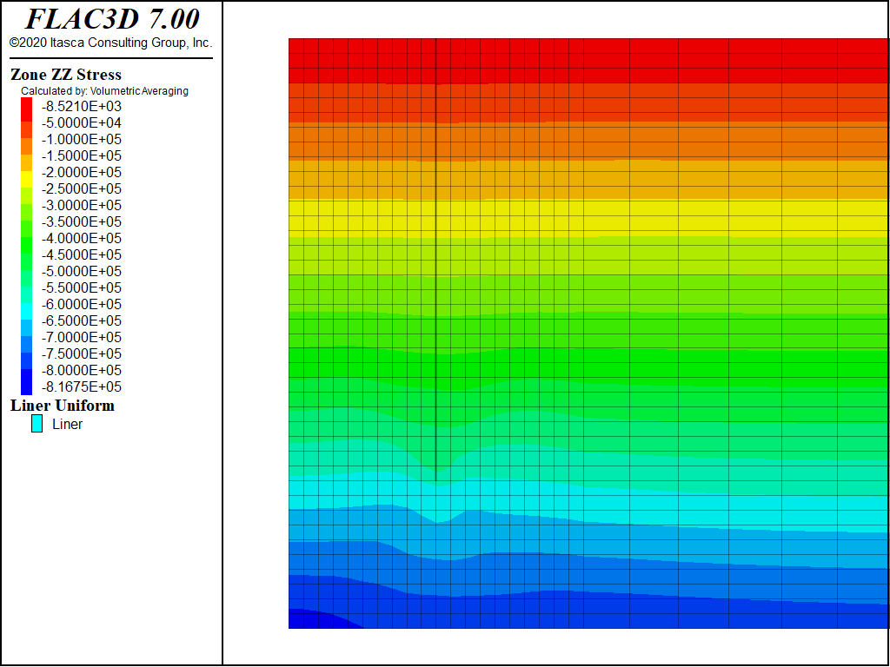
图 7：包含墙体重量时初始饱和状态的总竖向应力云图——带小应变刚度的 PH 材料。
降水至 20 m 深度
对于降水阶段，为简化起见，假定开挖区域内的水位瞬时下降[5]。从前一步出发，将开挖区域（属于分组“clay-left”的所有网格单元）的饱和度、孔隙压力和渗透率设为零。释放左边界开挖以下部分以及模型顶部开挖右侧部分沿线的固定孔隙压力条件，以便降水过程中孔隙压力可以变化。将模型中的位移初始化为零，以便监测仅由降水引起的位移变化。
当施加孔隙压力变化时，必须调整总应力以考虑该变化。这使用 单元网格点固定孔隙压力（zone gridpoint fix pore-pressure） 0 命令完成。当使用该命令修改已有的孔隙压力时，变化量被存储并在下一步施加到总应力状态上。这样，总应力得到调整，而有效应力保持不变。请注意，若使用 单元网格点初始化孔隙压力（zone gridpoint initialize pore-pressure） 命令，则总应力保持不变，而有效应力将被调整。
只要至少计算一步，就可通过在执行这些命令前后绘制有效应力来检查总应力是否已作出该调整：在施加瞬时孔隙压力时，模型中的有效应力保持不变。
现在求解降水引起的耦合响应。打开地下水流动，并将水的体积模量设为 10,000 Pa。该计算需要指定水的体积模量，此处取较低值以加快向稳态流动的收敛。这样做是因为瞬态行为并非关注对象。（请注意，为满足数值稳定性，水的体积模量存在下限——见流体时间尺度（Fluid Time Scales）。）
对于 Mohr-Coulomb 材料，降水后的稳态孔隙压力分布见图 8（Figure 8）。图 9（Figure 9） 绘出了平衡时的位移矢量。这表明降水引起的沉降量约为 15 cm。对于 Mohr-Coulomb 材料，模型状态保存为“mc-part-4”。
对 CYSoil 材料重复该降水过程。最终孔隙压力分布见图 10（Figure 10），与 Mohr-Coulomb 材料的结果（图 8（Figure 8））几乎相同。降水引起的位移见图 11（Figure 11）。该阶段 CYSoil 材料的模型保存为“cy-part-4”。
对 PH 材料再次重复该降水过程。最终孔隙压力分布见图 12（Figure 12），降水引起的位移见图 13（Figure 13）。该阶段 PH 材料的模型保存为“ph-part-4”。
对带小应变刚度选项的 PH 材料再次重复该降水过程。最终孔隙压力分布见图 14（Figure 14），降水引起的位移见图 15（Figure 15）。该阶段带小应变刚度选项的 PH 材料模型保存为“phss-part-4”。


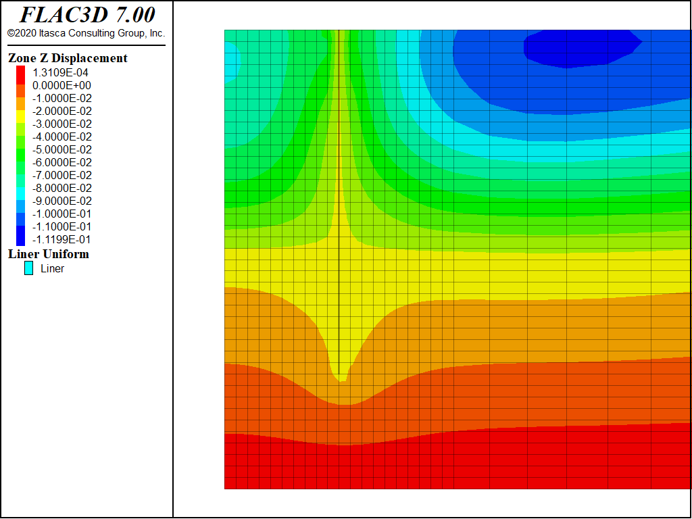
图 9：降水引起的位移——Mohr-Coulomb 材料。

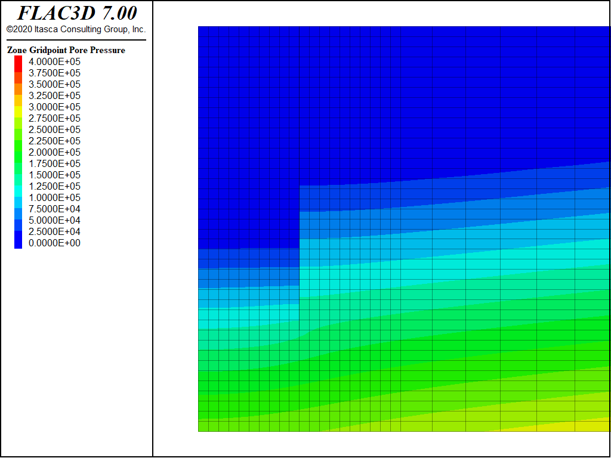
图 10：降水后的孔隙压力分布——CYSoil 材料。

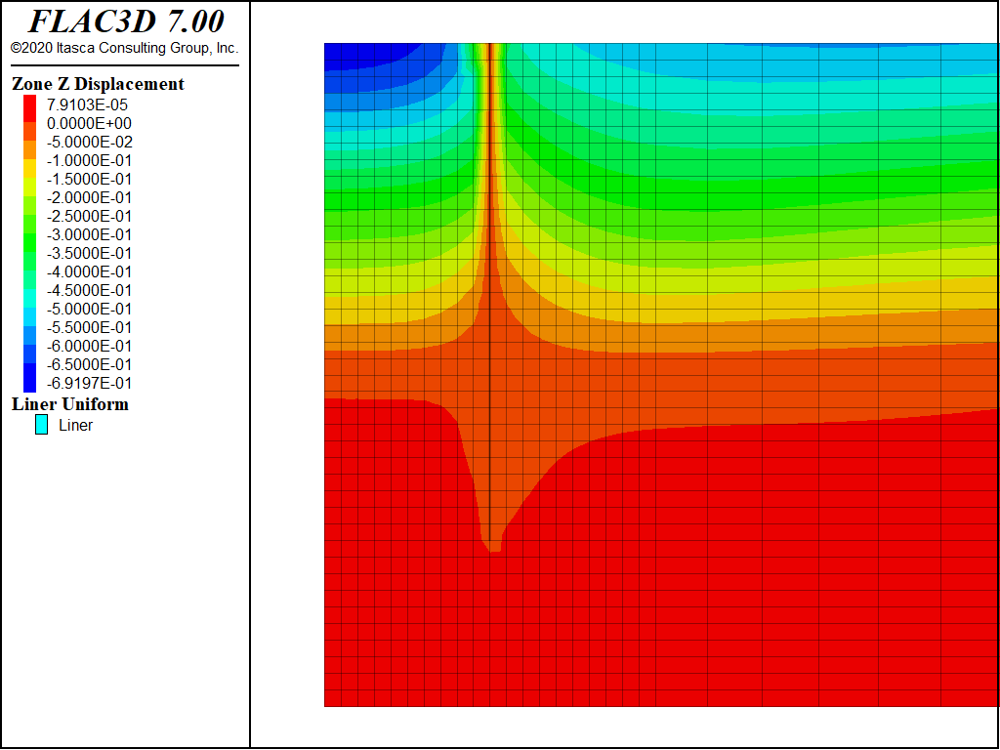
图 11：降水引起的位移——CYSoil 材料。


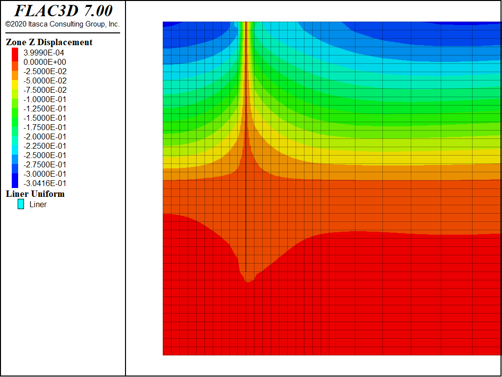
图 13：降水引起的位移——PH 材料。

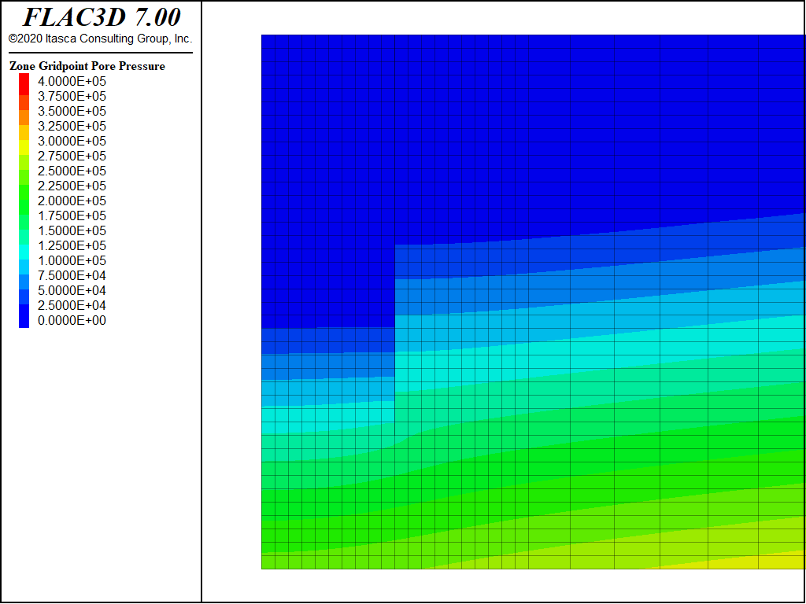
图 14：降水后的孔隙压力分布——带小应变刚度选项的 PH 材料。

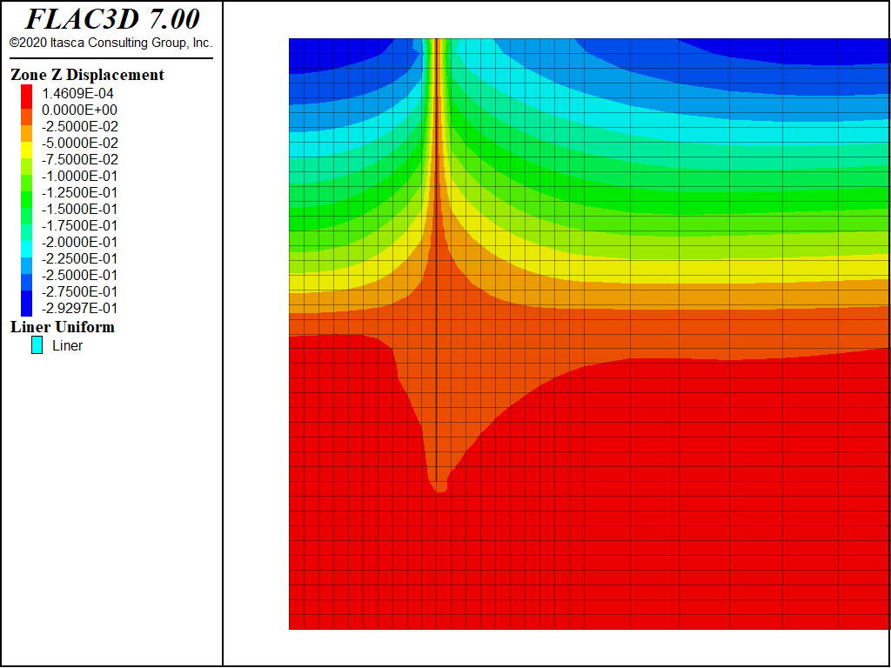
图 15：降水引起的位移——带小应变刚度选项的 PH 材料。
开挖至 2 m 深度
现在可以开始开挖至 2 m。从“mc-part-4”“cy-part-4”“ph-part-4”和“phss-part-4”出发，关闭流动，并为该纯力学计算将水的体积模量设为零。将位移初始化为零，以评价开挖引起的变形。
通过删除待开挖材料范围内的网格单元（使用命令 zone delete）来进行开挖，此处使用 Extruder 工具指定的块体名称。（也可对这些网格单元指定空模型，但在后续建模中不再需要这些网格单元。）图 16（Figure 16） 或 图 17（Figure 17） 给出了 2 m 开挖后部分网格的局部放大图。
此时模型已求解完成。这是长期响应（水体积模量设为零）。模型分别保存为“mc-part-5”、“cy-part-5”、“ph-part-5”和“phss-part-5”。
此次开挖引起的位移分别如图 16（Figure 16）、图 17（Figure 17）、图 18（Figure 18） 和图 19（Figure 19） 所示（分别对应 Mohr-Coulomb、CYSoil 和 PH 模型，后者不含和含小应变刚度）。采用 Mohr-Coulomb 模型时，开挖底部出现约 3.4 cm 的最大隆起。采用 CYSoil 模型时，开挖底部出现约 1.6 cm 的最大隆起。采用不含小应变刚度的 PH 模型时，开挖底部出现约 2.7 cm 的最大隆起。对于含小应变刚度的 PH 模型，最大隆起仅为 1.6 cm。

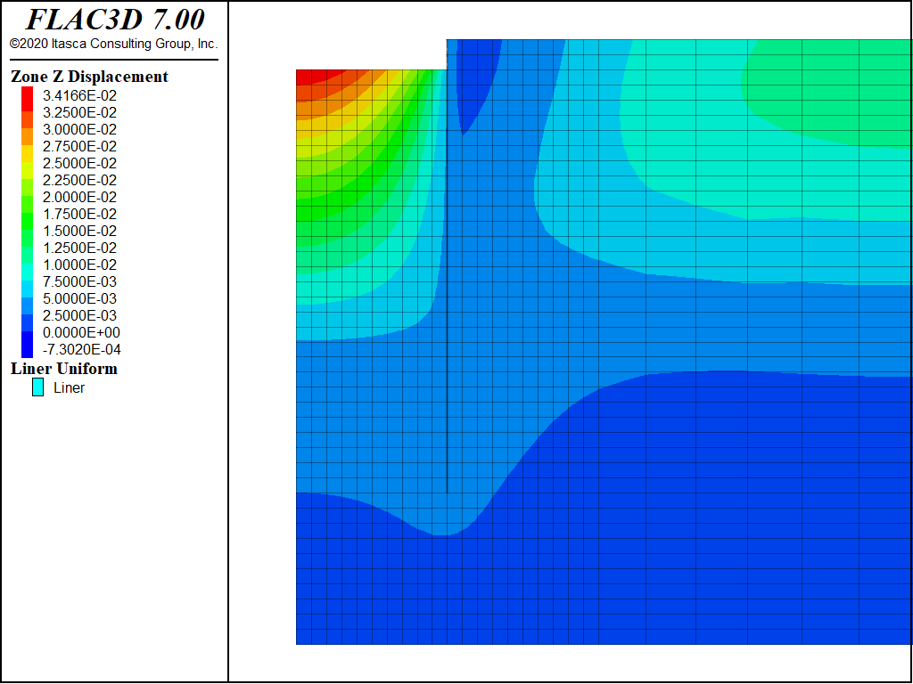
图 16：开挖至 2 m 深度引起的位移——Mohr-Coulomb 材料。

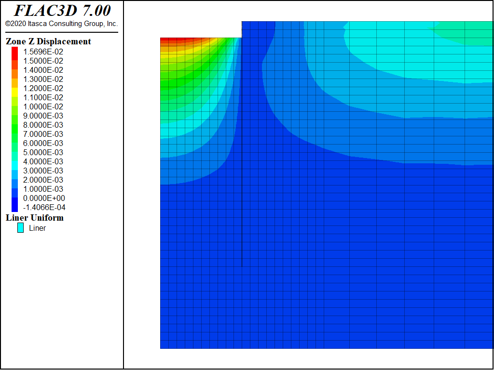
图 17：开挖至 2 m 深度引起的位移——CYSoil 材料。

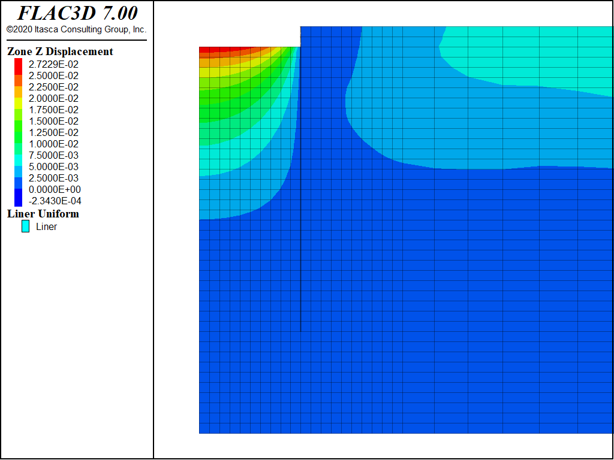
图 18：开挖至 2 m 深度引起的位移——PH 材料。

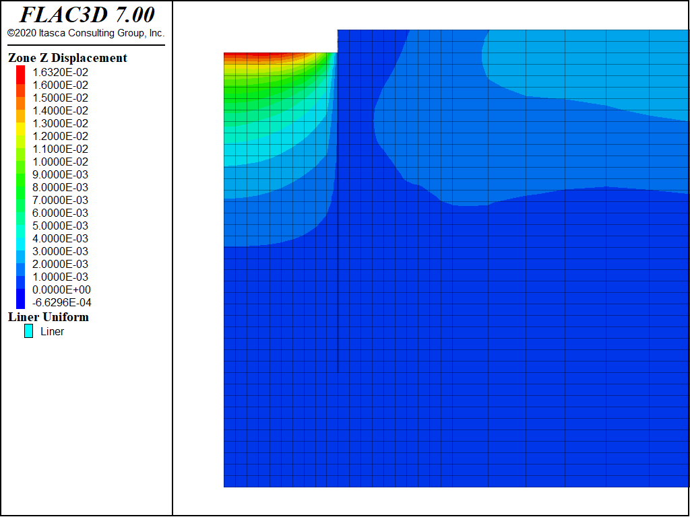
图 19：开挖至 2 m 深度引起的位移——含小应变刚度的 PH 材料。
还可以计算墙体的响应。例如，第一次开挖后墙体中的弯矩分布如图 20（Figure 20） 所示。请注意，墙体响应的各种结果（例如墙体位移、剪力）可以使用 FLAC3D 中的衬砌绘图项来绘制。

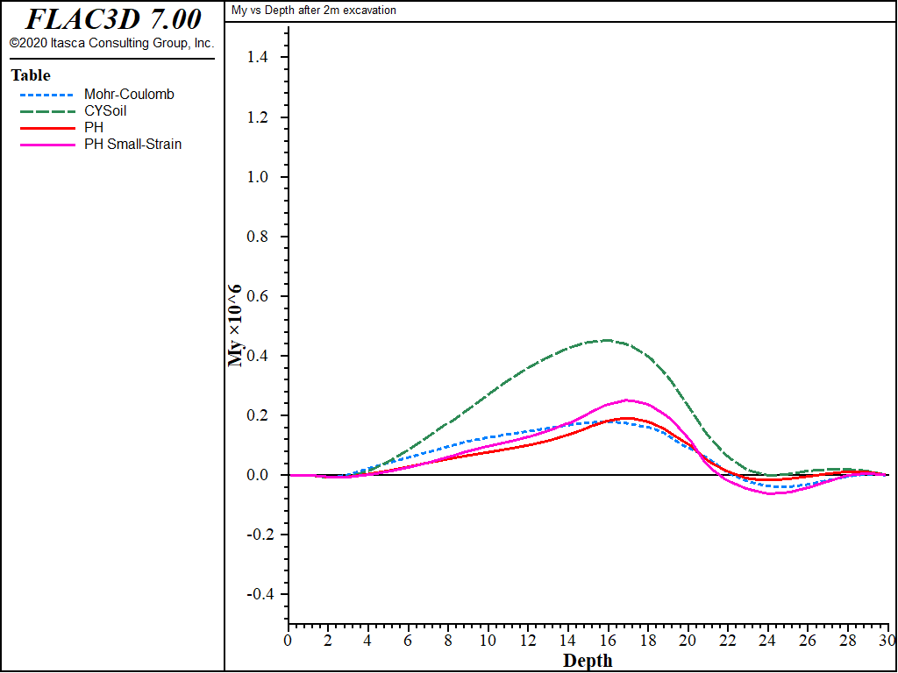
图 20：开挖至 2 m 深度后墙体中的弯矩内力 \(M_y\)——Mohr-Coulomb 和 CYSoil 材料。
安装支撑并开挖至 10 m 深度
对于最后一个开挖步骤，在墙顶安装水平支撑，然后开挖至 10 m 深度。在本练习中，支撑与墙体并非刚性连接。这里定义的是铰接连接（允许在支撑与墙体连接处自由转动）。支撑由单个梁单元构成，其高程等于开挖前的地面高程，从对称面（\(x = 0\) 平面）延伸至地下连续墙上的一点（(\(x,y,z\)) = (10,1,40)）。
首先创建水平支撑，确保其端部连接到衬砌节点，然后使用以下命令指定材料属性
struct beam create by-line (0,1,40) (10,1,40) snap group 'Beam'
struct beam property density 3000.0 young 4.0E9 poisson 0.30 ...
cross-sectional-area 1.0 moi-y 0.083 moi-z 0.083 ...
moi-polar 0.0 range group 'Beam'
对于对称面上的梁节点，除 \(z\) 方向位移自由度外，所有自由度均被约束，使用以下命令
struct node fix velocity-x velocity-y rotation range group 'Beam' position-x 0
这样做的效果是限制梁只能沿竖直方向移动；转动以及 \(x\) 和 \(y\) 方向位移均被抑制。
接下来，使用以下命令将梁连接到衬砌
struct node join range group 'Beam'
该命令会找到位于同一物理位置的节点，并将它们连接在一起。
使用以下命令释放该连接处的转动自由度
struct link attach rotation-x free rotation-y free rotation-z free ...
range group 'Beam' position-x 10
第二次开挖步骤通过使用以下命令删除第二开挖区域内的网格单元来完成
zone delete range group 'Block 15'
此时，从地表（\(z\) = 40 m）到黏土 1 层底部（\(z\) = 10 m）的所有网格单元均被删除，可以开始求解。达到平衡后，状态分别保存到文件“mc-part-6”（Mohr-Coulomb 情形）、“cy-part-6”（CYSoil 情形）和“ph-part-6”（PH 情形）中。
这三种情形下开挖至 10 m 深度引起的总位移分别如图 21（Figure 21）、图 22（Figure 22）、图 23（Figure 23） 和图 24（Figure 24） 所示。

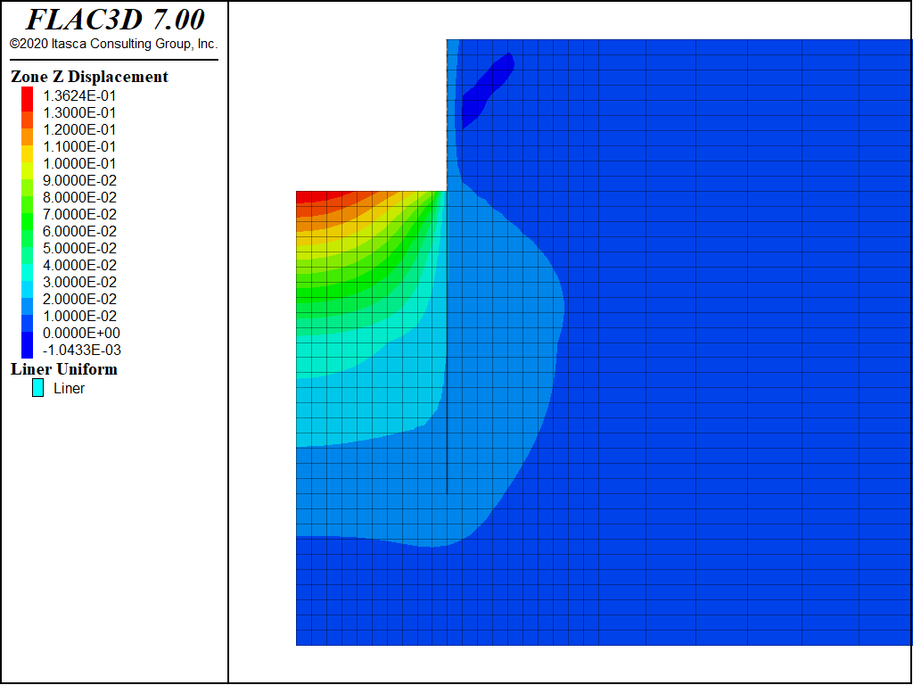
图 21：开挖至 10 m 深度引起的位移——Mohr-Coulomb 材料。

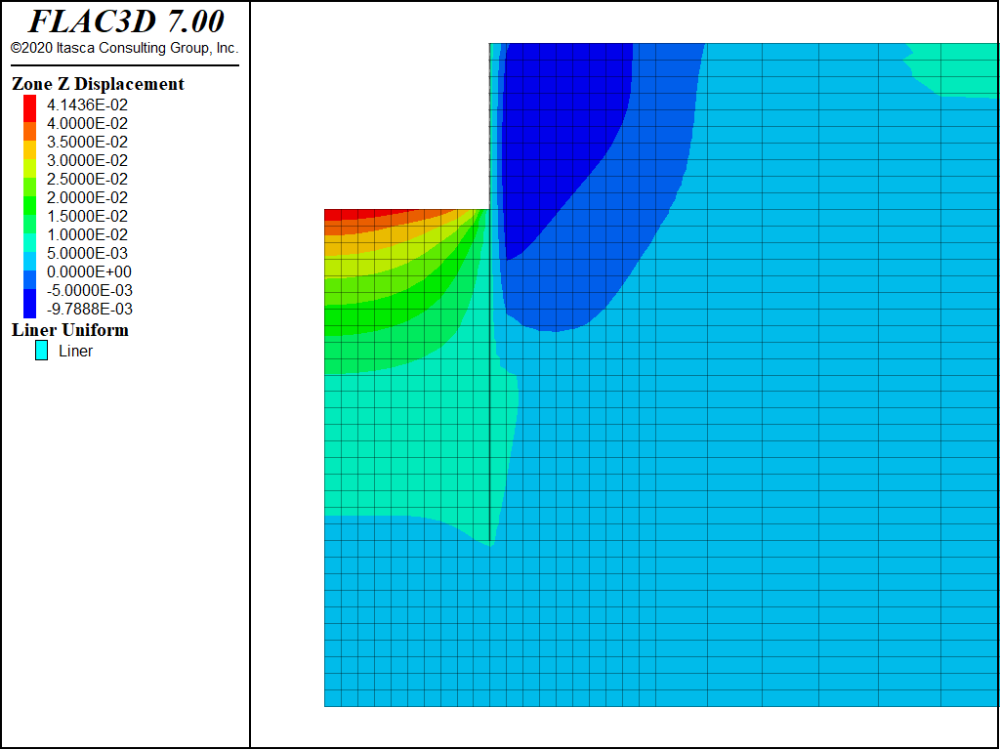
图 22：开挖至 10 m 深度引起的位移——CYSoil 材料。

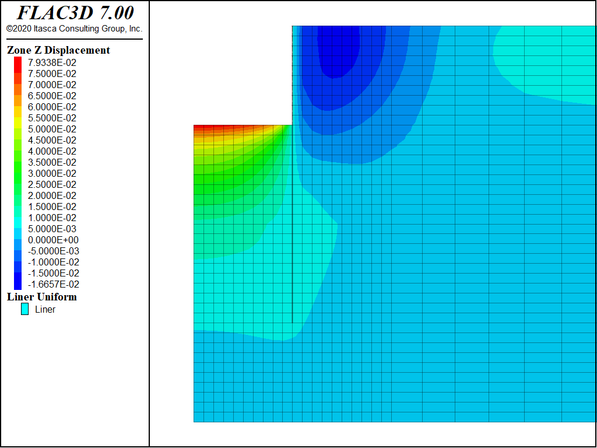
图 23：开挖至 10 m 深度引起的位移——PH 材料。

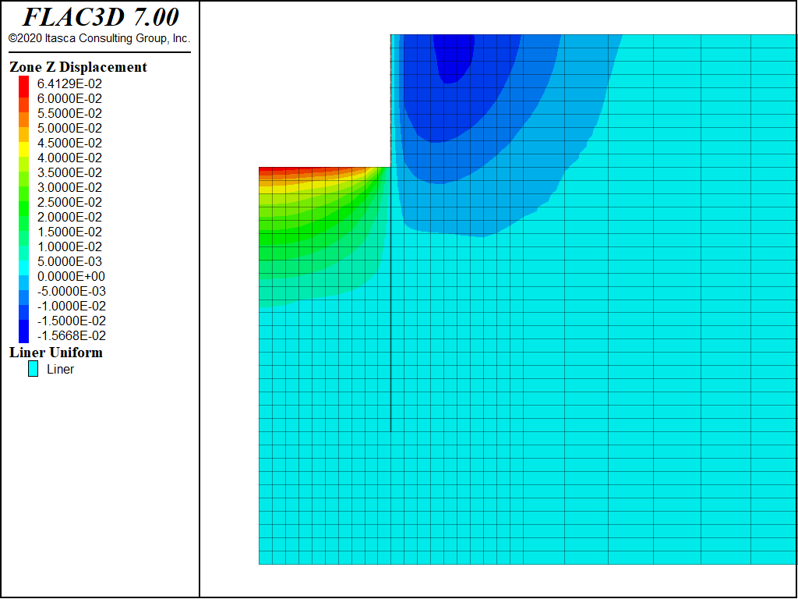
图 24：开挖至 10 m 深度引起的位移——含小应变刚度的 PH 材料。
比较图 21（Figure 21）、图 22（Figure 22）、图 23（Figure 23） 和图 24（Figure 24） 可以看出，CYSoil 和 PH 材料的最大位移远小于 Mohr-Coulomb 材料。此外，CYSoil 和 PH 材料中开挖引起的位移范围比 Mohr-Coulomb 材料更为局限。
第二次开挖后墙体中的弯矩分布如图 25（Figure 25） 所示。所有模型的最大弯矩大致相同。
图 26（Figure 26） 绘制了墙后地表位移。Mohr-Coulomb 材料在紧邻墙后的地表预测出不切实际的负沉降（向上位移），而 CYSoil 和 PH 材料正确预测出正沉降（向下位移），但 CYSoil 材料预测的沉降约为 PH 材料的一半。不含和含小应变刚度的 PH 材料在紧邻墙后预测的沉降几乎相同，但含小应变刚度的 PH 材料在远离墙体的地表预测的向上位移要小得多，这通常更接近现场观测结果。

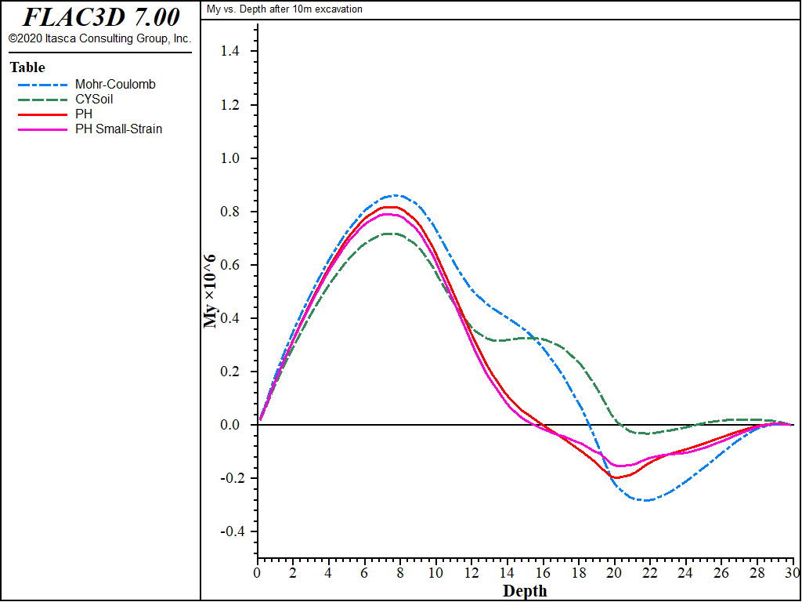
图 25：开挖至 10 m 深度后墙体中的弯矩内力 \(M_y\)——Mohr-Coulomb 和 CYSoil 材料。

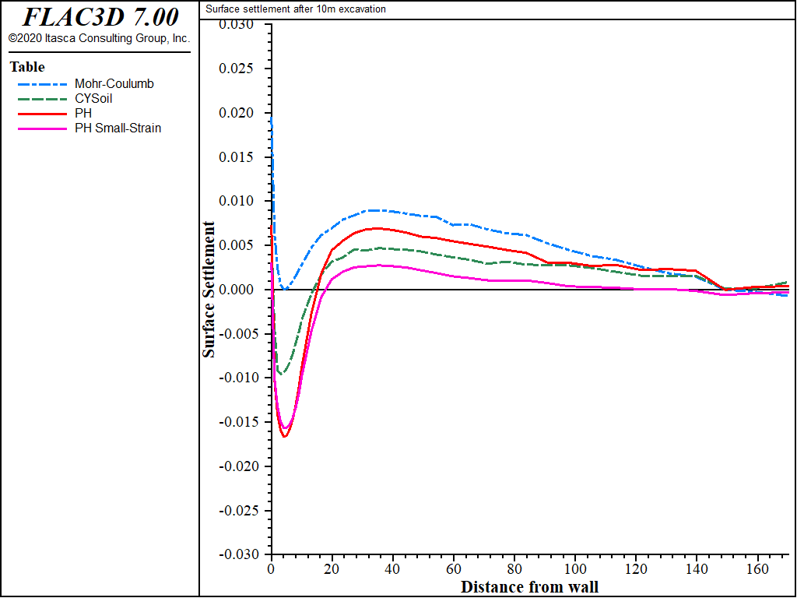
图 26：地表沉降剖面（\(x = 0\) 位于地下连续墙处）。
观察结果
该示例说明了材料模型对诸如支撑开挖施工等卸载问题的土体变形响应的影响。Mohr-Coulomb 材料中施工引起的开挖底部隆起明显大于 CYSoil 和 PH 材料。这主要归因于 CYSoil 和 PH 材料的应力相关弹性模量以及更刚硬的卸载响应。从图 21（Figure 21）（Mohr-Coulomb 材料）、图 22（Figure 22）（CYSoil 材料）或图 23（Figure 23） 和图 24（Figure 24）（PH 材料，分别不含和含小应变刚度）的位移云图对比中可以明显看出这一点。
参考文献
Plaxis BV. PLAXIS Version 8, Material Models Manual. R. B. J. Brinkgreve, ed. Delft: Plaxis (2002).（参考文献）
Plaxis BV. PLAXIS Version 8, Tutorial Manual. R. B. J. Brinkgreve, ed. Delft: Plaxis (2002).（参考文献）
数据文件
BracedExcavation-mc.dat
; ---------------------------------------------
; 支撑开挖的降水施工
; Mohr-Coulomb 模型
; ---------------------------------------------
model new
model large-strain off
model title 'Braced excavation - Mohr-Coulomb'
; 交互式创建的模型几何和标记
; 在 Extruder 中创建并从 State Pane 导出
; -----------------------------------------------
program call 'geometry' suppress
zone generate from-extruder
; 模型设置与初始化
; ------------------------------
; 流体模型与参数
model configure fluid
zone fluid cmodel assign isotropic
zone fluid property porosity 0.3 permeability 1.0E-10
zone initialize fluid-density 1000
; 力学参数
zone cmodel assign mohr-coulomb
zone property density 1700 young 40e6 poisson 0.30 friction 32 ...
dilation 2 cohesion 1e3 ...
range group 'sand-left' or 'sand-right'
zone property density 1600 young 10e6 poisson 0.35 friction 25 ...
dilation 0 cohesion 5e3 ...
range group 'clay-left' or 'clay-right'
; 创建衬砌并指定参数
struct liner create by-zone-face separate cross-diagonal range group 'Liner'
struct liner property isotropic (5.712e9, 0.2) thickness 1.26 ...
density 0 ; <--- 注意密度为零
struct liner property coupling-stiffness-normal 5.5E9 ...
coupling-stiffness-shear 5.5E9 ...
coupling-cohesion-shear 2500000.0 ...
coupling-friction-shear 12.5 ...
coupling-yield-normal 0 ...
coupling-cohesion-shear-residual 2500.0
struct liner property coupling-stiffness-normal-2 5.5E9 ...
coupling-stiffness-shear-2 5.5E9 ...
coupling-cohesion-shear-2 2500000.0 ...
coupling-friction-shear-2 12.5 ...
coupling-yield-normal-2 0 ...
coupling-cohesion-shear-residual-2 2500.0
; 初始化应力和孔隙水压力
model gravity 10
zone water density 1000
zone water plane origin (0,0,40) normal (0,0,1)
zone initial-stresses ratio 0.47 range group 'sand-left' or 'sand-right'
zone initial-stresses ratio 0.5 range group 'clay-left' or 'clay-right'
struct liner initialize coupling ; 初始化衬砌连接弹簧
; 以更快达到平衡。
; 边界条件 - 两侧滚轴边界，底部固定，顶部固定孔隙水压力，
; 左右两侧固定为当前值。
zone face apply velocity-y 0 range group 'Front' or 'Back'
zone face apply velocity-x 0 range group 'Left' or 'Right'
zone face apply velocity (0,0,0) range group 'Bottom'
zone face apply pore-pressure 0 range group 'Top'
zone gridpoint fix pore-pressure range group 'Right'
zone gridpoint fix pore-pressure range group 'Left'
model save 'mc-part-1'
; 达到初始平衡 -- 若无衬砌本已处于平衡，
; 有衬砌时则需要调整
; ------------------------------------------------------------------------
model fluid active off
model mech active on
model solve ratio-local 1e-4
model save 'mc-part-2'
; 激活衬砌
; ------------------
zone gridpoint initialize displacement (0,0,0) ; 重置模型中的
; 位移，以便跟踪
; 增量变化。
struct liner property density 2000 ; 真实衬砌密度
zone gridpoint initialize fluid-modulus 0.0
model solve ratio-local 1e-4
model save 'mc-part-3'
; 降水至 20 m 深度
; -------------------------
zone gridpoint initialize displacement (0,0,0) ; 重置模型中的
; 位移，以便跟踪
; 增量变化。
zone gridpoint fix pore-pressure 0.0 range group 'clay-left'
zone gridpoint initial saturation 0.0 range group 'clay-left'
zone fluid property permeability 0 range group 'clay-left'
zone gridpoint free pore-pressure ...
range group 'Left' group 'sand-left' ; 释放孔隙水压力
; （左侧边界）
; 降低流体模量以加快渗流计算
zone gridpoint initialize fluid-tension 0
zone gridpoint initialize fluid-modulus 10000.0
zone gridpoint initialize fluid-modulus 0 range group 'clay-left'
; 达到新的稳态渗流
model fluid active on
model fluid substep 100
model mechanical active on
model mechanical slave on
model mechanical substep 50 ; 力学循环从属于流体循环
model solve fluid time-total 5e9 or mechanical ratio 1e-4
model save 'mc-part-4'
; 开挖至 2 m
; --------------
model mechanical slave off
model fluid active off
zone gridpoint initialize fluid-modulus 0
zone gridpoint initialize displacement (0,0,0)
; 注意：由于 Extruder 容器的变化，该块编号发生了改变。
; 若与其他文件存在兼容性问题，可能会修正。
zone delete range group 'Block 10'
model solve ratio-local 1e-4
model save 'mc-part-5'
; 开挖至 10 m，并安装水平支撑
; ---------------------------------------------
struct beam create by-line (0,1,40) (10,1,40) snap group 'Beam'
struct beam property density 3000.0 young 4.0E9 poisson 0.30 ...
cross-sectional-area 1.0 moi-y 0.083 moi-z 0.083 ...
moi-polar 0.0 range group 'Beam'
; 对称面上的梁节点在 z 方向可自由移动
struct node fix velocity-x velocity-y rotation range group 'Beam' position-x 0
struct node join range group 'Beam' ; 将梁与衬砌连接
; 与衬砌连接的梁可自由转动
struct link attach rotation-x free rotation-y free rotation-z free ...
range group 'Beam' position-x 10
zone delete range group 'Block 16'
model solve ratio-local 1e-4
model save 'mc-part-6'
program return
BracedExcavation-cy.dat
model new
model large-strain off
model title 'Braced excavation - CY-Soil'
; 交互式创建的模型几何和标记
; 在 Extruder 中创建并从 State Pane 导出
; -----------------------------------------------
program call 'geometry' suppress
zone generate from-extruder
; 模型设置与初始化
; ------------------------------
; 流体模型与参数
model configure fluid
zone fluid cmodel assign isotropic
zone fluid property porosity 0.3 permeability 1.0E-10
zone initialize fluid-density 1000
; 力学参数
zone cmodel assign cap-yield
zone property pressure-reference 100e3 poisson 0.2 flag-cap 1 failure-ratio 0.9
zone property density 1700 friction 32 dilation 2 ...
cohesion 1e3 range group 'sand-left' or 'sand-right'
zone property density 1600 friction 25 dilation 0 ...
cohesion 5e3 range group 'clay-left' or 'clay-right'
zone property shear-reference 112.5 multiplier 2.333 ...
exponent 0.5 range group 'sand-left' or 'sand-right'
zone property shear-reference 15 multiplier 5.667 ...
exponent 0.9 range group 'clay-left' or 'clay-right'
; 创建衬砌并指定参数
struct liner create by-zone-face separate cross-diagonal range group 'Liner'
struct liner property isotropic (5.712e9, 0.2) thickness 1.26 ...
density 0 ; <--- 注意密度为零
struct liner property coupling-stiffness-normal 5.5E9 ...
coupling-stiffness-shear 5.5E9 ...
coupling-cohesion-shear 2500000.0 ...
coupling-friction-shear 12.5 ...
coupling-yield-normal 0 ...
coupling-cohesion-shear-residual 2500.0
struct liner property coupling-stiffness-normal-2 5.5E9 ...
coupling-stiffness-shear-2 5.5E9 ...
coupling-cohesion-shear-2 2500000.0 ...
coupling-friction-shear-2 12.5 ...
coupling-yield-normal-2 0 ...
coupling-cohesion-shear-residual-2 2500.0
; 初始化应力和孔隙水压力
model gravity 10
zone water density 1000
zone water plane origin (0,0,40) normal (0,0,1)
zone initial-stresses ratio 0.47 range group 'sand-left' or 'sand-right'
zone initial-stresses ratio 0.5 range group 'clay-left' or 'clay-right'
struct liner initialize coupling ; 初始化衬砌连接弹簧
; 以更快达到平衡。
; 由初始有效应力赋予 pc ---
program call 'initialize' suppress
; 边界条件 - 两侧滚轴边界，底部固定，顶部固定孔隙水压力，
; 左右两侧固定为当前值。
zone face apply velocity-y 0 range group 'Front' or 'Back'
zone face apply velocity-x 0 range group 'Left' or 'Right'
zone face apply velocity (0,0,0) range group 'Bottom'
zone face apply pore-pressure 0 range group 'Top'
zone gridpoint fix pore-pressure range group 'Right'
zone gridpoint fix pore-pressure range group 'Left'
model save 'cy-part-1'
; 达到初始平衡 -- 若无衬砌本已处于平衡，
; 有衬砌时则需要调整
; ------------------------------------------------------------------------
model fluid active off
model mech active on
model solve ratio-local 1e-4
model save 'cy-part-2'
; 激活衬砌
; ------------------
zone gridpoint initialize displacement (0,0,0) ; 重置模型中的
; 位移，以便跟踪
; 增量变化。
struct liner property density 2000 ; 真实衬砌密度
zone gridpoint initialize fluid-modulus 0.0
model solve ratio-local 1e-4
model save 'cy-part-3'
; 降水至 20 m 深度
; -------------------------
zone gridpoint initialize displacement (0,0,0) ; 重置模型中的
; 位移，以便跟踪
; 增量变化。
zone gridpoint fix pore-pressure 0.0 range group 'clay-left'
zone gridpoint initial saturation 0.0 range group 'clay-left'
zone fluid property permeability 0 range group 'clay-left'
zone gridpoint free pore-pressure ...
range group 'Left' group 'sand-left' ; 释放孔隙水压力
; （左侧边界）
; 降低流体模量以加快渗流计算
zone gridpoint initialize fluid-tension 0
zone gridpoint initialize fluid-modulus 10000.0
zone gridpoint initialize fluid-modulus 0 range group 'clay-left'
; 达到新的稳态渗流
model fluid active on
model fluid substep 100
model mechanical active on
model mechanical slave on
model mechanical substep 50 ; 力学循环从属于流体循环
model solve fluid time-total 5e9 or mechanical ratio 1e-4
model save 'cy-part-4'
; 开挖至 2 m
; --------------
model mechanical slave off
model fluid active off
zone gridpoint initialize fluid-modulus 0
zone gridpoint initialize displacement (0,0,0)
zone delete range group 'Block 10'
model solve ratio-local 1e-4
model save 'cy-part-5'
; 开挖至 10 m，并安装水平支撑
; ---------------------------------------------
struct beam create by-line (0,1,40) (10,1,40) snap group 'Beam'
struct beam property density 3000.0 young 4.0E9 poisson 0.30 ...
cross-sectional-area 1.0 moi-y 0.083 moi-z 0.083 ...
moi-polar 0.0 range group 'Beam'
; 对称面上的梁节点在 z 方向可自由移动
struct node fix velocity-x velocity-y rotation range group 'Beam' position-x 0
struct node join range group 'Beam' ; 将梁与衬砌连接
; 与衬砌连接的梁可自由转动
struct link attach rotation-x free rotation-y free rotation-z free ...
range group 'Beam' position-x 10
zone delete range group 'Block 16'
model solve ratio-local 1e-4
model save 'cy-part-6'
program return
BracedExcavation-ph.dat
model new
model large-strain off
model title 'Braced excavation - CY-Soil'
; 交互式创建的模型几何和标记
; 在 Extruder 中创建并从 State Pane 导出
; -----------------------------------------------
program call 'geometry' suppress
zone generate from-extruder
; 模型设置与初始化
; ------------------------------
; 流体模型与参数
model configure fluid
zone fluid cmodel assign isotropic
zone fluid property porosity 0.3 permeability 1.0E-10
zone initialize fluid-density 1000
; 力学参数
zone cmodel assign plastic-hardening
zone property pressure-ref 100e3 over-consolidation-ratio 1.0
zone property density 1700 friction 32 dilation 2 ...
cohesion 1e3 range group 'sand-left' or 'sand-right'
zone property density 1600 friction 25 dilation 0 ...
cohesion 5e3 range group 'clay-left' or 'clay-right'
zone property stiffness-50-reference 30e6 ...
stiffness-ur-reference 90e6 ...
stiffness-oedometer-reference 30e6 ...
exponent 0.5 ...
coefficient-normally-consolidation 0.47 ...
range group 'sand-left' or 'sand-right'
zone property stiffness-50-reference 8e6 ...
stiffness-ur-reference 24e6 ...
stiffness-oedometer-reference 4e6 ...
exponent 0.9 ...
coefficient-normally-consolidation 0.5 ...
range group 'clay-left' or 'clay-right'
; 创建衬砌并指定参数
struct liner create by-zone-face separate cross-diagonal range group 'Liner'
struct liner property isotropic (5.712e9, 0.2) thickness 1.26 ...
density 0 ; <--- 注意密度为零
struct liner property coupling-stiffness-normal 5.5E9 ...
coupling-stiffness-shear 5.5E9 ...
coupling-cohesion-shear 2500000.0 ...
coupling-friction-shear 12.5 ...
coupling-yield-normal 0 ...
coupling-cohesion-shear-residual 2500.0
struct liner property coupling-stiffness-normal-2 5.5E9 ...
coupling-stiffness-shear-2 5.5E9 ...
coupling-cohesion-shear-2 2500000.0 ...
coupling-friction-shear-2 12.5 ...
coupling-yield-normal-2 0 ...
coupling-cohesion-shear-residual-2 2500.0
; 初始化应力和孔隙水压力
model gravity 10
zone water density 1000
zone water plane origin (0,0,40) normal (0,0,1)
zone initial-stresses ratio 0.47 range group 'sand-left' or 'sand-right'
zone initial-stresses ratio 0.50 range group 'clay-left' or 'clay-right'
struct liner initialize coupling ; 初始化衬砌连接弹簧
; 以更快达到平衡。
; 由初始有效应力赋予 pc ---
program call 'initialize' suppress
; 边界条件 - 两侧滚轴边界，底部固定，顶部固定孔隙水压力，
; 左右两侧固定为当前值。
zone face apply velocity-y 0 range group 'Front' or 'Back'
zone face apply velocity-x 0 range group 'Left' or 'Right'
zone face apply velocity (0,0,0) range group 'Bottom'
zone face apply pore-pressure 0 range group 'Top'
zone gridpoint fix pore-pressure range group 'Right'
zone gridpoint fix pore-pressure range group 'Left'
model save 'ph-part-1'
; 达到初始平衡 -- 若无衬砌本已处于平衡，
; 有衬砌时则需要调整
; ------------------------------------------------------------------------
model fluid active off
model mech active on
model solve ratio-local 1e-4
model save 'ph-part-2'
; 激活衬砌
; ------------------
zone gridpoint initialize displacement (0,0,0) ; 重置模型中的
; 位移，以便跟踪
; 增量变化。
struct liner property density 2000 ; 真实衬砌密度
zone gridpoint initialize fluid-modulus 0.0
model solve ratio-local 1e-4
model save 'ph-part-3'
; 降水至 20 m 深度
; -------------------------
zone gridpoint initialize displacement (0,0,0) ; 重置模型中的
; 位移，以便跟踪
; 增量变化。
zone gridpoint fix pore-pressure 0.0 range group 'clay-left'
zone gridpoint initial saturation 0.0 range group 'clay-left'
zone fluid property permeability 0 range group 'clay-left'
zone gridpoint free pore-pressure ...
range group 'Left' group 'sand-left' ; 释放孔隙水压力
; （左侧边界）
; 降低流体模量以加快渗流计算
zone gridpoint initialize fluid-tension 0
zone gridpoint initialize fluid-modulus 10000.0
zone gridpoint initialize fluid-modulus 0 range group 'clay-left'
; 达到新的稳态渗流
model fluid active on
model fluid substep 100
model mechanical active on
model mechanical slave on
model mechanical substep 50 ; 力学循环从属于流体循环
model solve fluid time-total 5e9 or mechanical ratio 1e-4
model save 'ph-part-4'
; 开挖至 2 m
; --------------
model mechanical slave off
model fluid active off
zone gridpoint initialize fluid-modulus 0
zone gridpoint initialize displacement (0,0,0)
zone delete range group 'Block 10'
model solve ratio-local 1e-4
model save 'ph-part-5'
; 开挖至 10 m，并安装水平支撑
; ---------------------------------------------
struct beam create by-line (0,1,40) (10,1,40) snap group 'Beam'
struct beam property density 3000.0 young 4.0E9 poisson 0.30 ...
cross-sectional-area 1.0 moi-y 0.083 moi-z 0.083 ...
moi-polar 0.0 range group 'Beam'
; 对称面上的梁节点在 z 方向可自由移动
struct node fix velocity-x velocity-y rotation range group 'Beam' position-x 0
struct node join range group 'Beam' ; 将梁与衬砌连接
; 与衬砌连接的梁可自由转动
struct link attach rotation-x free rotation-y free rotation-z free ...
range group 'Beam' position-x 10
zone delete range group 'Block 16'
model solve ratio-local 1e-4
model save 'ph-part-6'
program return
尾注
| [1] | 要在 FLAC3D 中查看该项目，请使用程序菜单。
⮡ FLAC |
| [2] | 改编自 Plaxis Tutorial Manual（2002）的表 4.1。 |
| [3] | 改编自 Plaxis Material Models Manual（2002）的表 10.12） |
| [4] | 当在基准算例中将 CYSoil 模型与 Hardening Soil 模型进行比较时，发现 \(\alpha\) = 1 的取值能提供最佳拟合（见“砂土中三重锚固开挖墙的安装”，FLAC 8.0 手册示例应用卷中的第 17 节）。 |
| [5] | 为了获得更符合实际的解，FLAC3D 可以计算抽水引起的潜水面逐渐下降和应力状态变化。 |
⇐ Impermeable Concrete Caisson Wall with Pretensioned Tiebacks | Installation of a Triple-Anchored Excavation Wall ⇒
| 这些内容对您有帮助吗？… | FLAC3D © 2019, Itasca | 原文更新于 2020 年 10 月 8 日 |